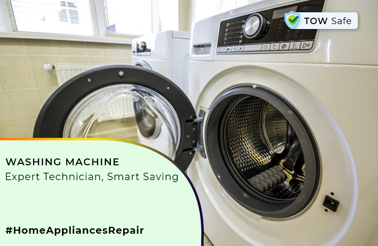
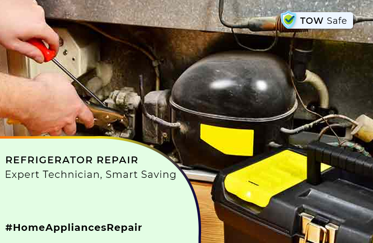
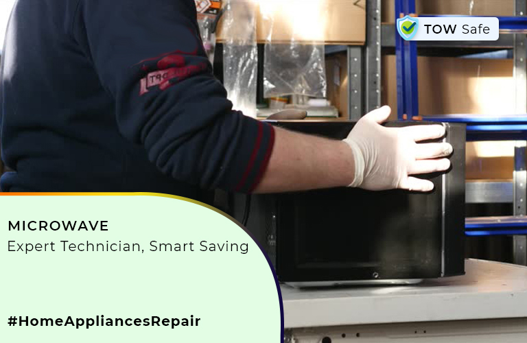
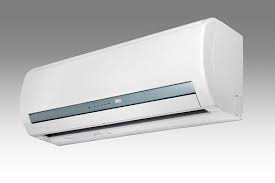

Home Appliances
Washing Machine
Refrigerator
Microwave-Oven
Air-Conditioner
Why Choose Us?
Support by trained technicians and staff at
your doorstep.
24*7 and 7 days on your service.
Fully Trained and professional technicians
with police verification
Service scheduling and one click booking
facility
Hassle free and cost effective solution.
Home Appliance Repair Service In Mumbai :
Home appliances are essential part of our daily life. Home Appliances Service Center is making your life easy
with our home appliance repairing service in mumbai. From Washing Machines Repair to Refrigerator Repair, from
Microwave Repair to RO repair. Our plethora of services including all types of Home Appliance Repair Services in
Mumbai ranging to wide variety of products. If you need any kind of Home Appliance Repairing Service you can
trust us for being your repairing partner. We have a well trained team of experts who are providing time saving
and ultimate solution to all your repair works in Mumbai. Repairing is not confined to repairing. We provide end
to end routine services, device check up’s and also give suggestion for any kinds of issue.
We are
providing a
wide range of home appliance repair in Mumbai for all kinds of home appliances like washing machine,
microwave,Air-Conditioner, RO purifier repair, fridge or refrigerator repair in Mumbai.